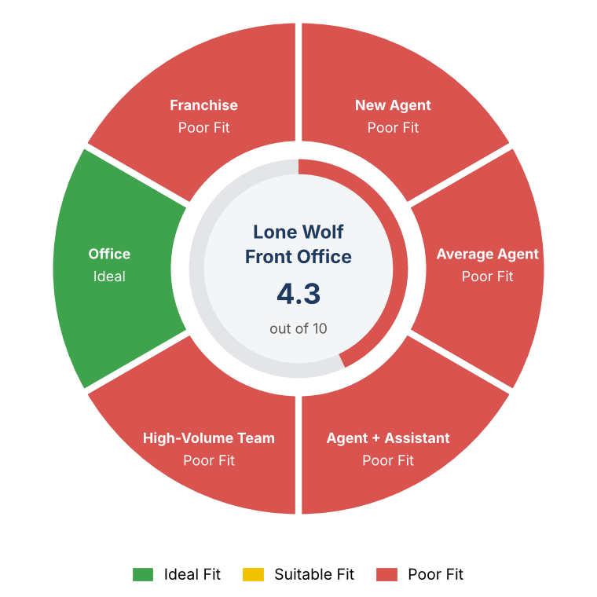

CRM Report

Lone Wolf Front Office
Summary
| Product | Lone Wolf Front Office (formerly Propertybase GO) |
|---|---|
| Company | Lone Wolf Real Estate Technologies Inc. (Lone Wolf Technologies) |
| Location | Dallas, Texas, United States Also an office in Cambridge, Ontario |
| Website | lwolf.com/engage/websites |
| Price | $4,188 per year (Website + CRM) |
| Final Score | 4.3/10 how it was calculated |
| Best fit | Real estate office |
| Type | Built for real estate |
| Free trial | No free trial |
Introduction
Lone Wolf Front Office is a real estate CRM sold alongside their IDX websites offering. It is marketed to brokerages. It began as Propertybase GO, the website-and-CRM product of Propertybase, which Lone Wolf acquired in 2021. It adopted the Front Office name in 2024. Lone Wolf now offers it as part of a lineup of three CRMs, ranging from its simpler Relationships CRM for new agents to the Salesforce-based Propertybase edition for large firms.
Its appeal is a single system for a brokerage’s online presence and lead handling: the brokerage website captures leads, the CRM routes them to agents, and the broker sees what each agent is doing. Front Office also integrates with the rest of Lone Wolf’s suite, including transaction forms, back-office accounting, and advertising tools so that a brokerage can buy most of its software from one vendor.
Lone Wolf was founded in Canada in 1989 by Lorne Wallace, a chartered accountant, to sell back-office software to brokerages. It grew through a long run of acquisitions. It is now based in Dallas, backed by the private equity firm Stone Point Capital, and led by Matt Fischer, who became chief executive in February 2026.
Pros and cons
Pros
- Repeated praise for the product’s ease of useReviews
- The commitment to delete data on requestPrivacy Policy
- Full marks for API featuresFeatures
- The customer retains its own domain nameTerms of Service
- Company age over 10 yearsCompany
- A Google Business Profile listingCompany
Cons
- A pattern of slow and unresponsive supportReviews
- No free trialTerms of Service
- Poor value: about $824 a year per feature pointValue
- Salespeople overpromising and underdeliveringReviews
- Persistent billing and cancellation problemsReviews
- Bug reports that go unanswered or unfixedReviews
Overall Score
| Category | Score | Notes |
|---|---|---|
| Features | 5.1/10 | Strong brokerage websites, lead routing and broker oversight, with little for print, relationship reminders or content libraries. |
| Reviews | 2/10 | Reviews across Lone Wolf’s products describe slow support, sales promises that were not kept and contracts that are hard to leave. |
| Value | 2.4/10 | An unpublished price of about $4,188 a year buys a mid-range feature set, so each feature point is expensive. |
| Terms of Service | 2/10 | No trial, no published price and a 12-month contract that renews for another year unless canceled 60 days ahead. |
| Support | 7/10 | Phone, chat and onboarding are offered and the help center is large, but reviews say the phone and onboarding promises are not kept. |
| Governance | 7.5/10 | An established company with sound data-processing commitments, offset by competing sister CRMs and a new leadership team. |
| Total | 4.3/10 | Average of the six categories |
- Features5.1/10
- Reviews2/10
- Value2.4/10
- Terms of Service2/10
- Support7/10
- Governance7.5/10
Fit
Front Office is built for the independent brokerage that wants its website, its agents’ websites, and its CRM on one platform. The broker gets a branded site for the firm and each office, sites for agents and teams, and a CRM that routes new leads to the right agent and lets the broker see the whole office’s activity, while agents keep their own contacts private. A brokerage that already uses Lone Wolf for forms or accounting gains the most, since the pieces are designed to work together.
The broker is the buyer, while agents are the users, so the key question is whether the broker is comfortable with how Lone Wolf sells and supports the product. Setup is a project, not a simple sign-up, and the contract is difficult to exit. Brokers should view the purchase as a long-term commitment and get all setup promises in writing.
Individual agents, agents with an assistant, and teams are not the buyers Front Office is sold to: it is offered as a brokerage package on an annual contract, and Lone Wolf directs new agents to its separate Relationships CRM. Most agents who use Front Office get it through their broker. Franchises, on the other hand, use Lone Wolf’s wider platform rather than this product.

Features 5.1/10
Lone Wolf Front Office’s strengths are the ones a brokerage buys it for: IDX websites with landing pages, automatic lead routing with claimable lead pools, email and text campaigns, and roles that let a broker supervise agents. It is weak in the relationship and print tools that individual agents use to stay in touch with past clients.
A full feature earns 1 point, a partial one 0.5. Open a group to see each feature, the points it earned and the vendor source.
Contacts5/9
| Feature | Points | Notes |
|---|---|---|
| Contact records with detailed notes | 1 | Contact profiles with notes, comments and website activity. source |
| Household and Relationship Tracking | 0.5 | Extra email addresses for other household members on one contact; no relationship types. source |
| Track B-Days, Closing Anniversary, Children B-Days | 0 | Only through a custom date field the brokerage creates. source |
| Separate property address and mailing address | 0.5 | Contact address plus properties the contact follows for updates. source |
| Separate databases for Prospects/Contacts | 0.5 | One database with lead statuses and automatic buyer, seller and client lists. source |
| Categories, filters, and sorting | 1 | Statuses, personal and company tags, advanced search and sortable columns. source |
| Merge Duplicates | 0.5 | Imports can update matching contacts instead of creating duplicates; no merge tool found. source |
| Referral Source Tracking | 0.5 | Heard About From field with a Referral option and the referring website domain. source |
| Custom fields for mail merge and Google sync | 0.5 | Custom contact fields exist; their use in merge fields or Google sync is not documented. source |
Import1/4
| Feature | Points | Notes |
|---|---|---|
| CSV Import from any CRM / Lead Source | 1 | CSV and Google Contacts import with field mapping. source |
| vCard and iCal importer | 0 | |
| Create custom lead importers | 0 | |
| Load Mail Forms, Task/Activity Plans via CSV | 0 |
Export1/5
| Feature | Points | Notes |
|---|---|---|
| Service Report PDF | 0 | |
| Calendar as CSV or iCal | 0 | |
| Contacts as CSV or vCard | 1 | Contacts export to CSV. source |
| Mail Forms, Task/Activity Plans via CSV | 0 | |
| Income and expenses for tax preparer | 0 |
Calendar2/4
Tasks5/9
| Feature | Points | Notes |
|---|---|---|
| Individual & Recurring | 1 | Tasks can be created, reassigned and set to recur within action plans. source |
| Activity Plans | 1 | Action plans combine tasks, emails and texts. source |
| Relative Date Scheduling | 0.5 | Plan steps run a set delay after the plan is applied; no recalculation from a changing anchor date. source |
| Conditional Workflows | 0.5 | A task can wait for a parent task to be completed. source |
| Sortable & Filterable List | 1 | Task list with filters. source |
| Touch Cycle Reminders | 0 | Only by building a recurring action plan. source |
| Daily Call List | 0 | |
| B-Day/Anniversary Reminders | 0 | Only through a dated action-plan task the agent sets up. source |
| Assign to Team Members | 1 | Tasks can be assigned and reassigned to users. source |
Email8/11
| Feature | Points | Notes |
|---|---|---|
| Schedule one mail-merged email to a single contact | 0.5 | Individual emails are sent from the contact profile; scheduling not documented. source |
| Schedule a bulk mail-merged email | 1 | eBlasts can be scheduled. source |
| Schedule drip mail-merged emails | 1 | Drip campaigns with send delays and user tokens. source |
| Open and Link-Click Tracking | 1 | Campaign insights show delivery and engagement. source |
| Embed video | 0 | |
| Track spam complaints using feedback loop | 0 | |
| Hard bounce tracking | 1 | Contacts can be filtered by bounced email. source |
| Opt-out Handling | 1 | Unsubscribes and contact subscription preferences. source |
| Letterhead & Signature | 1 | Email signatures on user profiles and branded layouts. source |
| Mail Merge | 1 | User tokens in campaign emails. source |
| Deliverability Reports/Diagnostics | 0.5 | Campaign delivery metrics and sender-domain validation; no diagnostics report. source |
Print0/7
| Feature | Points | Notes |
|---|---|---|
| Mail Merge | 0 | No print mail merge. source |
| Mass letters | 0 | No mass letters. source |
| Mass labels & envelopes | 0 | No labels or envelopes. source |
| Time-release drip letters | 0 | No printed drip letters. source |
| Time-release drip labels/envelopes | 0 | No printed drip labels. source |
| Export mailing lists to postcard and greeting card vendors | 0 | No postcard or greeting card vendor export. source |
| Letterhead & Signature | 0 | No printed letterhead. source |
SMS4/8
| Feature | Points | Notes |
|---|---|---|
| Text Message Chat | 1 | Two-way text conversations from the CRM. source |
| MMS texting | 0 | |
| STOP compliance | 1 | Replies such as STOP unsubscribe the contact automatically. source |
| Tasks / Appointments Notifications | 0 | |
| Notifications of new leads | 1 | Text notifications about lead interactions. source |
| Opened/Read status of text messages | 0 | |
| Bulk texting | 1 | Text blasts to lists. source |
| Multi-Party Group Chat | 0 |
Phone1/1
| Feature | Points | Notes |
|---|---|---|
| Click-to-Dial | 1 | Click-to-call through Twilio, enabled automatically. source |
API3/3
Leads6/8
| Feature | Points | Notes |
|---|---|---|
| New-lead notification by email | 1 | Lead notifications and daily digest emails. source |
| Call capture | 0 | No call capture. source |
| Call capture voice-message transcription | 0 | No call capture. source |
| Web lead-capture form / Contact me form | 1 | Website forms and lead-capture pop-ups. source |
| Automatic assignment of drip sequences and tasks | 1 | Default drips start from website actions and follow-up tasks are created for new leads. source |
| Lead source and conversion tracking | 1 | Revenue by source report tracks sources through closed transactions. source |
| Automatic Lead Routing | 1 | Round robin, listing-based distribution, time blocks, fallback agent and acceptance time limits. source |
| Agent claimable lead pools | 1 | Click to Claim leads. source |
Money0.5/2
| Feature | Points | Notes |
|---|---|---|
| Track Income | 0.5 | Revenue reports from closed transactions and income goals; no income ledger. source |
| Track Expenses | 0 |
Reports3/8
| Feature | Points | Notes |
|---|---|---|
| Goal Tracking | 0.5 | Income and transaction goals on the user profile; no progress report found. source |
| Period-over-period Income and Sales reports | 0 | |
| Agent Activity Reports | 1 | Agent adoption and contacts engagement reports. source |
| Period-over-period Agent Activity Analysis | 0 | |
| Agent Performance Rankings | 0.5 | Revenue by agent compares agents' performance; no ranking view. source |
| Sales Pipeline/Funnel | 1 | Pipeline Insights with a funnel view on the contacts page. source |
| Projected Sales based upon Deals in Pipeline | 0 | |
| Live Service Reports | 0 |
Transactions2.5/11
| Feature | Points | Notes |
|---|---|---|
| Buyer needs database | 1 | Contact details for price range and timeframe plus saved searches. source |
| Track showings, showing feedback, and offers | 0 | |
| Transaction management | 0.5 | Through connected Lone Wolf Transact, zipForm or TransactionDesk, sold separately. source |
| Contingency tracking | 0 | |
| Key date tracking | 0 | |
| Earnest money tracking | 0 | |
| Conveyance tracking | 0 | |
| Contacts can connect to multiple deals | 1 | Several contacts can be added to a transaction. source |
| Lockbox database | 0 | |
| Electronic lockbox integration | 0 | |
| Document storage | 0 |
MLS2.5/3
Sync2.5/3
| Feature | Points | Notes |
|---|---|---|
| High Fidelity Two-Way Contact sync | 1 | Two-way Google Workspace and Microsoft 365 contact sync. source |
| High Fidelity Two-Way Calendar sync | 0.5 | Google calendar sync for Workspace accounts; direction not stated. source |
| High Fidelity Two-Way Mail sync | 1 | Gmail and Office 365 email sync. source |
Mobile1.5/2
Team4/6
| Feature | Points | Notes |
|---|---|---|
| Shared database | 1 | Brokerage and community contacts shared across users. source |
| Limit assistant’s access to certain sections of the database | 1 | Employee and editor roles limit which areas a user can open. source |
| Limit permissions for some team members | 0.5 | Roles restrict areas; no specific export or delete control found. source |
| Office assistant/broker can supervise agents’ accounts, but agents can see only their own data | 1 | Brokers see all contacts; agents see only their own and community contacts. source |
| Record-Level Permissions | 0.5 | Contact ownership and private contacts; no per-record grants. source |
| Outside Vendor Database Access | 0 |
Infrastructure0.5/3
| Feature | Points | Notes |
|---|---|---|
| Change Log | 0.5 | Change history for campaigns only. source |
| Undelete Records | 0 | |
| Record Restore to Previous Version | 0 |
Content2/7
Calculator0.5/5
| Feature | Points | Notes |
|---|---|---|
| Max Loan and Mortgage Payment | 0 | |
| Buyer's and Seller’s Net | 0 | |
| Commissions | 0 | |
| Rent vs. Own | 0 | |
| CMA | 0.5 | Through Lone Wolf Cloud CMA, sold separately. source |
Niche5/6
| Feature | Points | Notes |
|---|---|---|
| IDX agent website | 1 | Brokerage, office, team and agent IDX websites are the core of the package. source |
| Hosted landing pages | 1 | Landing pages, dedicated property pages and a home valuation page. source |
| Predictive lead scoring | 0.5 | Lead score counts website actions; no relationship or intent model described. source |
| Automated market or home-value reports | 1 | Market Insights reports that contacts can subscribe to. source |
| Multi-Office Management | 1 | Offices with their own sites; users assigned to up to 11 offices. source |
| Public API and outbound event webhooks | 0.5 | Outbound webhooks and the Lone Wolf API portal. source |
The lead side is well developed. Leads arrive from brokerage and agent websites, Zapier, Zillow, and parsed lead emails, then flow to agents via round robin, listing, or schedule, with a fallback agent and time limits for accepting a lead. Drip campaigns and action plans start automatically based on website activity. Text messaging includes text blasts and automatic handling of STOP replies, and Market Insights reports keep contacts informed about their area. Brokers can run several offices and connect other systems through webhooks and Lone Wolf’s API.
Several features receive only half credit because they are partial. Contacts can store additional household email addresses but not relationships such as spouses or children; imports can update existing records, but there is no merge tool, and the referral source is a field rather than a link to the referring contact. Action plans support task dependencies but not branching; Google Calendar sync is documented without specifying whether it works both ways, and the only change history covers campaigns. Open house sign-in, comparative market analyses, and transaction management are available only through separate Lone Wolf products at extra cost.
Much of what an agent needs to work a sphere of influence is missing. It lacks built-in birthday or anniversary tracking, keep-in-touch reminders, a letter library, eCards, and printed letters, labels, or postcards. Call capture, agent calculators, showing and offer tracking, and key-date tracking for transactions were not found, and many of these appear to be in Lone Wolf’s transaction products instead.
Price
Lone Wolf does not publish Front Office prices; buyers must request a demo. The most recent published figures come from a 2024 comparison by Ascendix, which lists two packages. The typical plan, Website + CRM, starts at $349 a month on an annual contract, or $4,188 a year, and covers up to five users.
| Plan | Monthly | Annual | What's included |
|---|---|---|---|
| Website + CRM Typical | $349 | $4,188 | Brokerage and agent IDX websites and the CRM for up to 5 users, with one MLS feed and one Cloud CMA account; annual contract |
| Website + CRM + Leads + Text Concierge | $849 | $10,188 | Adds purchased leads and a text-response service; six-month minimum contract; users included not stated |
No setup, onboarding, or training fees are published, so the typical first-year cost matches the annual price: $4,188. Onboarding is part of setup, but Lone Wolf does not disclose whether it carries a separate charge.
This review uses single-user pricing for its comparisons. Because the typical package already includes five users, you can add an assistant at no extra cost within that limit. No price has been published for a team of 10.
Reviews 2/10
82 ratings across 3 sources: 33% are four or five stars.
Review feed · 2 real quotes from the reviews we read (0 positive, 2 critical)
| Source | 5★ | 4★ | 3★ | 2★ | 1★ | Total |
|---|---|---|---|---|---|---|
| Apple App Store | 3 | 0 | 0 | 0 | 0 | 3 |
| BBB | 0 | 0 | 3 | 0 | 26 | 29 |
| Google Business Profile | 16 | 8 | 1 | 2 | 23 | 50 |
| All sources | 19 | 8 | 4 | 2 | 49 | 82 |
The table counts the 82 rated reviews and complaints studied, 24 of them from the past two years. No review site lists Front Office or Propertybase GO, so BBB and Google Business Profile cover Lone Wolf’s whole product family, not just Front Office. BBB combines the Lone Wolf Technologies profile in Dallas (12 reviews and 16 complaints with text) and the Propertybase profile in Boulder (1 review); complaints have no stars, so they are counted at 1 star when unanswered, 2 when answered without resolving the issue, and 3 when resolved. Google Business Profile combines Lone Wolf’s Cambridge, Ontario, and Dallas listings and is limited to the 50 most recent of 51 eligible reviews; one entry that was not a product review was left out. The App Store row covers the Propertybase GO mobile app. A Reddit discussion informs the text but has no star ratings.
Ratings have fallen sharply over time. Google Business Profile reviews from 2017 to 2019 are almost all four or five stars and often thank named support staff, whereas every Google review since 2023 gives three stars or fewer. The decline spans Lone Wolf’s string of acquisitions, the move of Propertybase GO into Front Office, and staff cuts described by former employees in 2026.
Positive
The praise focuses on ease of use. All three App Store reviews of the Propertybase GO mobile app, the Front Office companion app, call it simple to navigate and useful for tracking leads and adding notes on the go. Several older Google Business Profile reviews call Lone Wolf’s software user-friendly and its reports flexible. Most of this praise is more than two years old.
Negative
Support is the most common complaint. Reviewers describe hours on hold, weeks without replies, and emails answered only by automated messages that direct them to the online community, as well as support staff handing customers back to their salesperson. One customer whose system had not worked properly for months wrote, “They also go weeks without responding if they do respond at all” (BBB, May 2026).
Many complaints stem from the sale. Buyers say they were promised integrations, a completed setup, qualified leads, or the right to cancel after a few months, only to find otherwise. A broker who bought a bundle including the website and CRM said key parts were not working months after onboarding began, adding, “This delay was never disclosed during the sales process” (BBB, May 2025). Others describe products that remained broken, from websites that never worked properly to repeated sign-in lockouts.
Billing problems follow. Customers report annual subscriptions that renewed without warning, refunds denied, charges that continued after they asked to cancel, and cancellation allowed only if they paid for the rest of the contract. In a few cases, Lone Wolf’s replies on BBB resolved the issue, but most complaints went unanswered.
Value 2.4/10
Lone Wolf Front Office’s typical Website + CRM package costs about $4,188 per year, and its normalized feature score is 5.1, so each feature point costs about $824. The package price includes brokerage and agent websites and five users, which a brokerage may value more than this single-user comparison suggests. Still, the CRM itself offers an average feature set at a price near the top of the market.
Terms of Service 2/10
Lone Wolf Front Office has no free trial and no published price. The contract runs for a fixed term, usually a year, with few ways out.
Under the Terms of Service, the subscription runs for the term specified in the sales order. Then it renews automatically for another term of the same length unless either party gives at least 60 days’ written notice before the term ends. Fees are non-cancellable and non-refundable. Renewals are billed at Lone Wolf’s list price at the time of renewal, and prices may change with 30 days’ notice. The customer can end the agreement early only if Lone Wolf breaches it and fails to fix the problem.
Reviews indicate these terms are in effect. Customers report unexpected renewals, refused refunds, and cancellation offered only as a buyout of the remaining contract. A broker who asked to drop part of a new Lone Wolf bundle within 30 days was told, “nope - you have a long-term contract” (Reddit, 2024). Several buyers say a salesperson told them they could cancel after a few months, which the written terms do not allow.
The terms are balanced in one respect: Lone Wolf can end the agreement only for cause, not at will, and must refund prepaid fees if the customer terminates due to Lone Wolf’s breach. A brokerage also retains control of its own domain name, since the website runs on a domain the customer registers and points to Front Office.
Support 7/10
On paper, support is broad: the support page offers phone, chat, email, and tickets from 9 a.m. to 7 p.m. Eastern on weekdays. It also notes that most products offer 24/7 support, and the contact page lists the support number.
Self-help resources are extensive. The Lone Wolf Knowledge Center holds more than a hundred Front Office articles, and the older Propertybase help center adds hundreds more. Lone Wolf also runs live and recorded training sessions for brokers and agents on the CRM and websites (Front Office training). New customers are set up through onboarding with an implementation specialist before the website launches.
Reviews tell a different story about the people behind these channels. Customers describe phone lines that only play a recording, hours on hold, and slow replies. Brokers say the promised setup help never materialized, leaving them to build workflows on their own. Because reviews contradict the stated phone support and onboarding, neither earns credit here. The gap between a solid support policy and a very low review score is the clearest sign that Lone Wolf is not delivering what it describes.
Lone Wolf does not disclose where its support staff work. Former employees on Reddit report that US staff were replaced by workers in Colombia and the Philippines in 2026, and Lone Wolf is hiring for contact-center roles in Manila. Still, the company has not confirmed that support has moved offshore.
Governance 7.5/10
Lone Wolf Front Office’s governance score is the average of its company score and its privacy policy score.
Company 7/10
Lone Wolf was founded in Canada in 1989 by Lorne Wallace to sell back-office accounting software to brokerages and has grown through a long series of acquisitions into a broad real estate software suite. Its head office is in Dallas, and it also maintains an office in Cambridge, Ontario. A holding company backed by the private equity firm Stone Point Capital owns it; Stone Point bought Vista Equity Partners’ stake in 2020.
Front Office came with Propertybase, which Lone Wolf acquired in 2021. It is one of three CRMs Lone Wolf sells today, alongside Relationships for new agents and the Salesforce-based Propertybase edition. Lone Wolf retired another CRM it had acquired, LionDesk, in 2025. Front Office still receives regular updates, with monthly release notes through October 2026, but a buyer should know that its owner offers competing products and has shut down a CRM before.
Leadership has changed rapidly. Matt Fischer replaced longtime chief executive Jimmy Kelly in February 2026, and in May a new chief technology officer, chief customer officer, and chief innovation officer followed, after a new chief industry relations officer joined in 2025 (Lone Wolf). Employees rate the company 3.2 out of 5 on Glassdoor, and recent reviews there mention repeated layoffs.
Lone Wolf’s public record is mixed. Its main BBB profile in Dallas has an F grade, driven by unanswered complaints, while its Canadian profiles and the Propertybase profile hold A+ grades with no complaints (BBB). The company sells software and leads but has no mortgage, title, insurance, or brokerage business.
Privacy Policy 8/10
Lone Wolf commits to handling a brokerage’s contacts and leads as a processor for the customer, not disclosing them and deleting them on request. However, its terms also allow it to use that data to show customers offers for other products.
The Terms of Service state that the customer owns its data and that Lone Wolf treats it as the customer’s confidential information, disclosing it only in aggregated form or with the customer’s written consent. The Data Processing Addendum adds that Lone Wolf processes this personal data as a processor on the customer’s instructions, and the privacy policy says the same for information about the customer’s clients. The same documents cover leads captured on Front Office websites.
The weak point is a license in the Terms of Service. The customer grants Lone Wolf a perpetual, irrevocable license to use customer data to run the service and to show users “information about other Lone Wolf products” or third-party products that might interest them. How far this extends to contact records is not spelled out, and the Data Processing Addendum does not clearly override it because it counts uses set out in the agreement among the customer’s instructions.
When an account ends, Lone Wolf may delete the data. Exporting it afterward is at Lone Wolf's discretion and may cost extra, so a brokerage should export everything before the term ends. Lone Wolf commits in the Data Processing Addendum to delete personal data within 30 days of a written request.
The Terms of Service grant Lone Wolf a perpetual license that survives the end of the agreement, while the Data Processing Addendum (section 8) promises to delete personal data upon request. Lone Wolf should state that the license ends when the data is deleted or when the agreement ends.
The privacy policy’s list of disclosures states that Lone Wolf may share information with its corporate affiliates but does not say whether this excludes client information. The same policy says client information is processed only as a processor, and the Terms of Service prohibit disclosing it except in aggregated form. Lone Wolf should state that the affiliate clause does not apply to client information.
Conclusion
Lone Wolf Front Office is a real estate CRM and website platform built for independent brokerages, and the main reason a broker might hesitate is how difficult it is to leave once signed.
For a brokerage, the product makes sense if you are loyal to Lone Wolf’s other product offerings. Front Office connects a company website to lead distribution and tracking and integrates with the rest of Lone Wolf’s suite. Its weaknesses lie in sales and support. Prices are not published, there is no trial, and contracts run for a year with automatic renewal. Customers across Lone Wolf’s products report slow support, incomplete setups, and sales promises that are not honored in the contract. The CRM handles new leads well but offers little help in keeping agents in touch with past clients.
Two red flags stand out. Lone Wolf sells two other CRMs, has retired one it previously acquired, and most of its senior leadership is new as of early 2026. Its data commitments are better than most, but because the brokerage’s websites feed leads into a system whose terms allow Lone Wolf to use that data to present its own and partners’ products, a broker should ask to narrow that license.
At about $4,188 a year, Front Office is poor value as a CRM alone, though a brokerage that also needs its websites rebuilt may view the package differently. It suits a brokerage that wants a single vendor and can negotiate its contract and setup commitments up front; others will find better-supported options at lower cost.
Alternatives
- RealtyJuggler: A low-cost CRM for individual agents and small offices, with included onboarding, training, and phone support. It costs a small fraction of Front Office and is easy to leave, though it lacks a brokerage website platform, so it suits agents and smaller offices rather than a broker who wants websites and CRM in one system.
- WiseAgent: An agent-focused CRM with free phone support, onboarding, and one-on-one training, priced at about $499 per year on a month-to-month basis. It is a much cheaper, better-supported choice for agents and teams, while Front Office targets brokerages that want their websites included.
- iXactContact: A real estate CRM from Elm Street Technology, priced at about $561 per year, with much stronger support and privacy marks than Front Office. It is built for individual agents, agents with an assistant, and teams rather than for a brokerage buying an office-wide platform.
- FollowUpBoss: Zillow’s lead-management CRM, with hundreds of integrations and strong follow-up for teams, at about $696 per year on a month-to-month basis. It fits high-volume teams and agents with assistants better than Front Office, but it has no brokerage website suite of its own.
- Brivity: A real estate platform from PLACE, founded by agent Ben Kinney, priced at about $3,588 per year with an assistant included. It costs less than Front Office and earns far better support and privacy marks, though it is built for high-volume teams rather than whole brokerages.
- Lofty: An all-in-one CRM and IDX website platform with a broader feature set than Front Office, priced at about $3,588 per year plus an activation fee. It targets high-volume teams and shares Front Office’s weak reviews and strict contract terms.
- TopProducer: A long-established CRM for experienced agents and teams, priced at about $2,148 per year on a 12-month contract. It costs less than Front Office but offers no phone support and is aimed at agents rather than brokerages.
- BoldTrail: On Inside Real Estate’s platform, formerly kvCORE, priced at about $5,988 per year plus an implementation fee. It competes directly with Front Office, offering more features at a higher price, with similarly poor reviews and contract terms, but stronger support marks.
$14.92/mo
90-day free trial
(Card not required) Best fit:New AgentAverage AgentAgent + AssistantOffice
$49/mo
14-day free trial
(Card required) Best fit:New AgentAverage AgentAgent + AssistantHigh-Volume Team
$55/mo
14-day free trial
(Card required) Best fit:Average AgentAgent + AssistantHigh-Volume Team
$69/mo
14-day free trial
(Card not required) Best fit:Agent + AssistantHigh-Volume Team
$299/mo
No free trial Best fit:High-Volume Team
$299/mo
No free trial Best fit:High-Volume Team
$179/mo
No free trial Best fit:Average AgentAgent + AssistantHigh-Volume Team
$499/mo
No free trial Best fit:OfficeFranchise
Timeline
- Our reportUpdate paragraphs for easy reading.
- Our reportResearch the product, pricing, features, contracts, support, privacy, company, and reviews; first report.
Head-to-head comparisons
Sources
- Vendor website: Front Office · CRM lineup · Websites · Pricing · Get a demo · Propertybase GO is now Front Office · About · Leadership · Contact · Support · Front Office training · Propertybase GO training · Careers
- Company news releases: Press releases · Three senior executive appointments · York Baur joins Lone Wolf
- Help center: Front Office Knowledge Center · Front Office release notes · Update your domain and launch your website · Propertybase help center
- Legal: Terms of Service · Privacy Policy · Data Processing Addendum
- Pricing: Ascendix · TheClose
- Review sites: Apple App Store · Google Business Profile, Cambridge, Ontario · Google Business Profile, Dallas
- BBB: Lone Wolf Technologies profile · Reviews · Complaints · Complaints page 2 · Propertybase reviews · Lone Wolf Real Estate Technologies Inc, Langley · Lone Wolf Real Estate Technologies, Langley · Penderis Computers, Cambridge
- Community: Reddit r/RealEstate
- Company: Glassdoor · LinkedIn · Stone Point Capital · Placester · HousingWire · Real Estate News · PE Hub · Justia Dockets · Domain registration (RDAP)
- Searched, nothing found: G2 · Capterra (with Software Advice and GetApp, which share its reviews) · Gartner Peer Insights · Trustpilot · TrustRadius (Propertybase Salesforce Edition only) · SourceForge (with Slashdot) · Software Finder · Yelp · PissedConsumer · Google Play · Reddit r/realtors · Reddit r/RealEstateTechnology
- Not searched in this pass: Facebook, YouTube, Zapier.com, RealEstateBees, AlternativeTo, TechRadar, FitSmallBusiness, Forbes Advisor, Inman, PitchBook, Crunchbase.
- Not cited: Cuspera, Front Office vs. Market Leader · Cuspera, JobNimbus vs. Front Office · BoldTrail back-office comparison · Lone Wolf vs BoldTrail (BackOffice) · Terms of Use · Propertybase legal notices · RealtyJuggler reviews index · RealtyJuggler Propertybase comparison